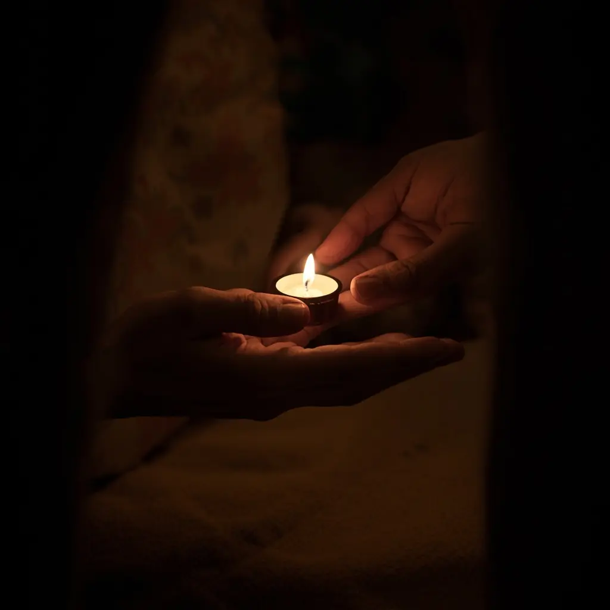
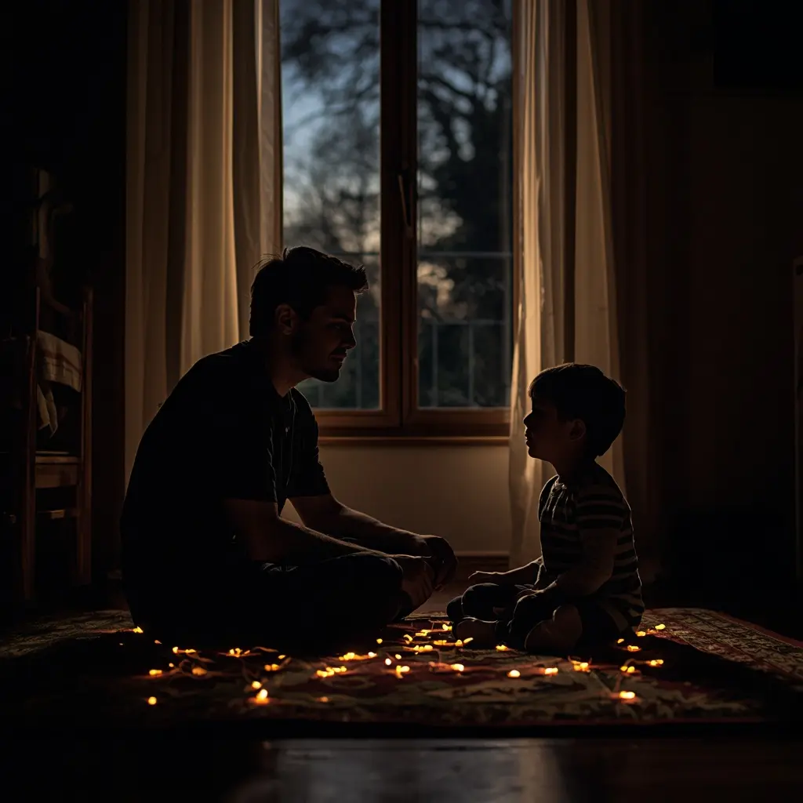
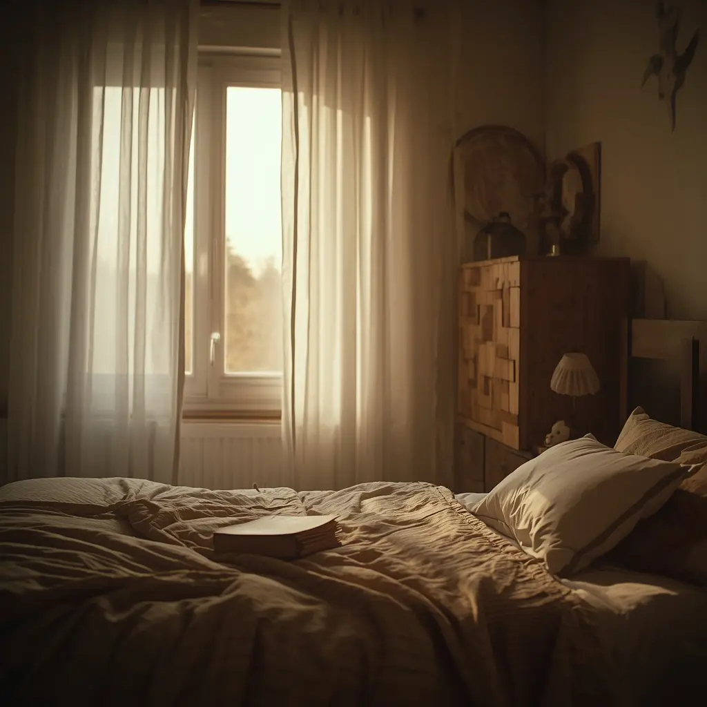
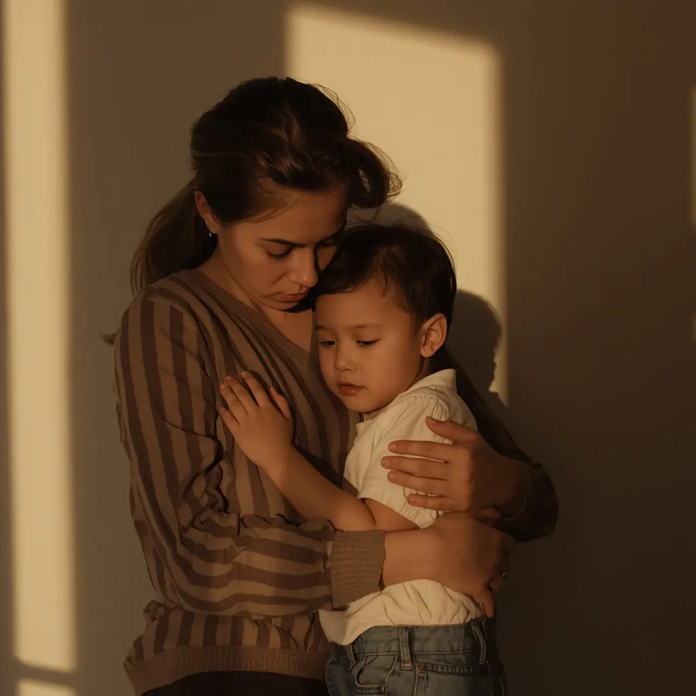
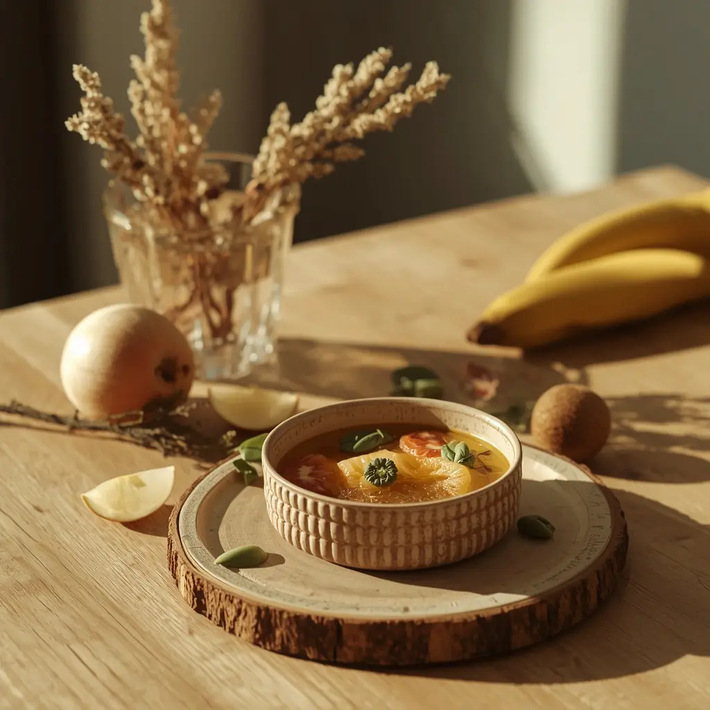
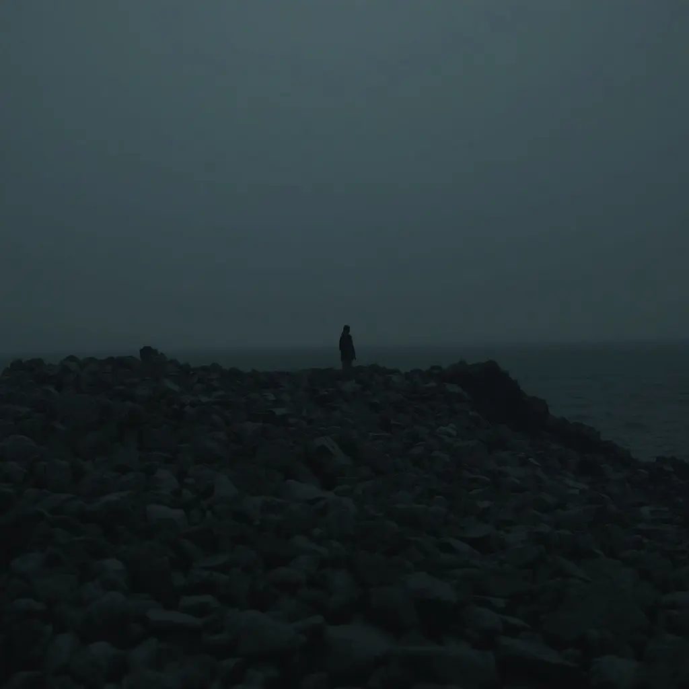

Caminar con esperanza: comprendiendo el cáncer infantil
Este es un espacio que nace desde lo más hondo de las entrañas y del corazón, un recorrido que me toca muy de cerca en lo personal. Afrontar el cáncer en la infancia es el reto más difícil al que puede enfrentarse una familia, y por eso he querido reunir aquí una guía construida con el respeto más absoluto, el rigor médico necesario y un acompañamiento humano inquebrantable. Un mapa paso a paso para disipar miedos, entender los tratamientos, cuidar la unión familiar y sostener la esperanza en cada etapa del camino. Pincha en cada etapa para profundizar.
Un profundo agradecimiento: Esta guía no existiría sin la labor incansable, la vocación y la humanidad desbordante de los médicos, oncólogos pediátricos, enfermeras, psicooncólogos y personal sanitario que sostienen cada día los hospitales. Nuestro más sincero reconocimiento también a las asociaciones de cáncer infantil, voluntarios y entidades sociales que acompañan sin descanso a las familias, convirtiendo la ciencia y la solidaridad en un auténtico faro de esperanza.
Resumen visual de la guía
Comprendiendo los tipos de cáncer infantil
Un recorrido divulgativo, riguroso y accesible para entender las principales tipologías tumorales en la infancia (leucemias, linfomas, tumores cerebrales y óseos), despojando a los términos médicos de su complejidad.
Explorar sección especial ➔
La luz en medio de la tormenta
Cómo afrontar el impacto inicial del diagnóstico, perdiendo el miedo al nombre de la enfermedad y transformando el desconcierto en una red de apoyo firme y amorosa.
Acompañar este paso ➔Nuestros aliados en el camino
La importancia vital de confiar en los especialistas en oncología pediátrica, entender los procesos clínicos sin saturarse y convertir el hospital en un entorno seguro.
Acompañar este paso ➔
Poner nombre a la realidad
La importancia de comunicar el diagnóstico con honestidad, claridad y lenguaje adaptado a la infancia para disipar miedos y construir un vínculo de confianza inquebrantable.
Acompañar este paso ➔
Hacer sencillo lo complejo
Estrategias y metáforas sencillas para explicar los tratamientos médicos oncológicos a los niños sin tecnicismos ni miedos innecesarios.
Acompañar este paso ➔
Rutinas y resiliencia en casa
Cómo gestionar las quimioterapias, las bajadas de defensas y los cambios en la rutina diaria manteniendo espacios vivos de normalidad, juego y afecto.
Acompañar este paso ➔
Sostenernos para poder sostener
Cuidar la salud mental de los padres, gestionar la incertidumbre cotidiana y atender con delicadeza las necesidades emocionales de los hermanos.
Acompañar este paso ➔El vínculo con la escuela
Cómo coordinar la continuidad escolar, el contacto cercano con los profesores y compañeros, y mantener vivo el sentido de pertenencia al grupo.
Acompañar este paso ➔
Nutrir la fuerza y la energía
Pautas oncológicas adaptadas para cuidar la alimentación, el descanso, el confort corporal y la energía durante las distintas fases del tratamiento.
Acompañar este paso ➔
Navegando los días difíciles
Cómo actuar ante la fiebre, las complicaciones o los momentos de mayor desgaste físico, encontrando siempre un ancla firme en la esperanza médica.
Acompañar este paso ➔Mirando hacia el futuro
La vuelta progresiva a la normalidad, la superación de los controles médicos periódicos y la construcción de una infancia llena de horizontes abiertos.
Acompañar este paso ➔